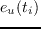

Next: Finding the GMEC Up: Results Previous: Results
|
|
REMC was done with height replicas at temperatures between 0.175 and 3  units. Simulation lengths were 750 million steps (per replica). The top 10000 sequence/conformation combinations were retained, corresponding to 200-400 unique sequences. For eight of the nine test proteins, all the retained sequences were recognized as members of the correct superfamily and family, with match lengths and E-values given in table 4.4. Thus, our designed sequences are mostly similar to experimental ones. Sequence identities to wildtype are 31% on average (table 4.4), similar to earlier studies with the same energy function [#!Schmidt09!#,#!Schmidt10!#]. The good agreement with experiment is also illustrated by computing similarity scores between the designed sequences and sequences from the Pfam database. For the protein core region, the similarity is similar to that between experimental sequences, as shown in figure 4.1. Notice that we use here a simple CASA solvent model, since our focus is not the quality of the designed sequences, but the performance of our search algorithms. With a more sophisticated Generalized Born solvent model and a more highly optimized unfolded state model, sequence quality would be even better (manuscript in preparation).
Representative sequence logos for the protein core are shown in Fig. 4.1, illustrating the agreement between designed and experimental sequences. For the SH3 protein 1CKA, the design mostly recovers the native sidechain type, or a homologous type that is common in other natural sequences from Pfam. Exceptions include position 170, where we obtain I or V, whereas the native type is W; however, L and V are also occasionally found in Pfam. At position 139, we sample R instead of the native A or V, found in Pfam; however, the hydrophobic part of the designed Arg sidechain is homologous to A and V, while its ionized tip actually sits outside the hydrophobic core, at the protein surface. Finally, at position 143, we sample W, which is homologous to Y and F found in Pfam. For the PDZ domain 2BYG, agreement with the native and Pfam sequences is similar, with a few departures: at positions 207 and 245, we sample W instead of the natural types I, L, V, P; at position 253, we sample H, compared to mostly I, L, V, and sometimes F in Pfam; at position 265,we always sample Y, whereas the Pfam types are diverse (and mostly hydrophobic).
|
For the 1A81 SH2 domain, the lowest energy sequences are not recognized by Superfamily, but if we assay sequences that are 8-12 kcal/mol above the GMEC, about 10% are correctly recognized by Superfamily as SH3 sequences. Similarly, if the top 10,000 sequences produced by the heuristic algorithm are tested, 57% of them are recognized by Superfamily as SH3 family members. The heuristic sequences are also 8-12 kcal/mol above the GMEC (see below). This protein illustrates the imperfect parameterization of our energy function, with the consequence that higher energy sequences can actually be more realistic, in some cases, than lower energy ones. Thus, the signifiance of the GMEC is only as good as the energy function.
|
| Number of | Identity | Superfamily tests | |||||
| sequences | % to | Match | Superfamily | Superfamily | Family | Family | |
| Protein | tested | wildtype | length | E-value | success rate | E-value | success rate |
| 1A81 | 236 | 27 | none | ||||
| 1ABO | 203 | 32 | 51/58 | 4.4e-4 | 100% | 2.8e-3 | 100% |
| 1BM2 | 209 | 27 | 78/98 | 4.2e-5 | 100% | 2.6e-3 | 100% |
| 1CKA | 416 | 33 | 40/57 | 1.1e-5 | 100% | 3.4e-3 | 100% |
| 1G9O | 338 | 36 | 79/91 | 7.0e-7 | 100% | 2.5e-3 | 100% |
| 1M61 | 405 | 42 | 97/109 | 7.2e-7 | 100% | 2.6e-4 | 100% |
| 1O4C | 274 | 21 | 95/104 | 2.1e-4 | 100% | 4.5e-3 | 100% |
| 1R6J | 270 | 34 | 74/82 | 9.8e-6 | 100% | 4.6e-3 | 100% |
| 2BYG | 426 | 28 | 59/97 | 1.4e-5 | 100% | 7.1e-3 | 100% |
mignon 2017-11-30